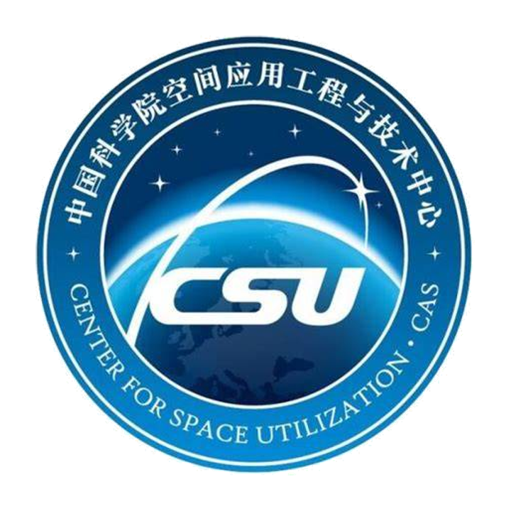
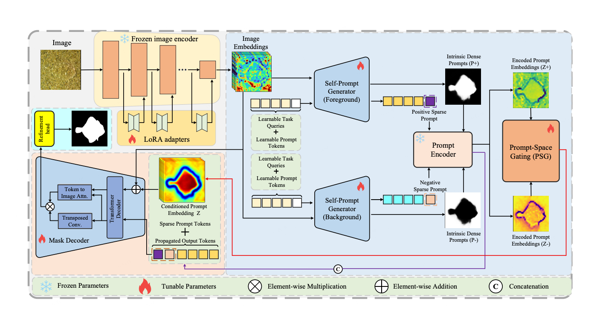
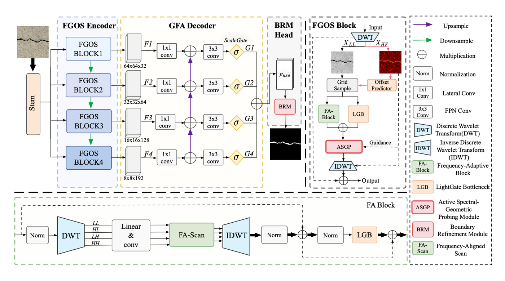
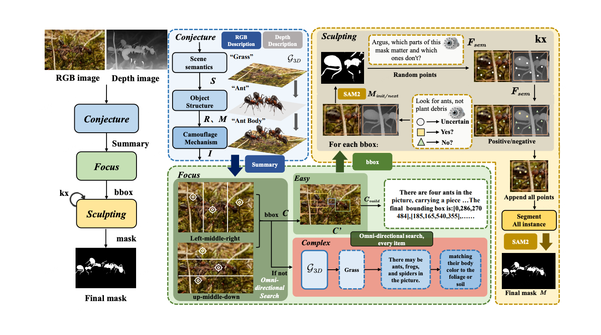
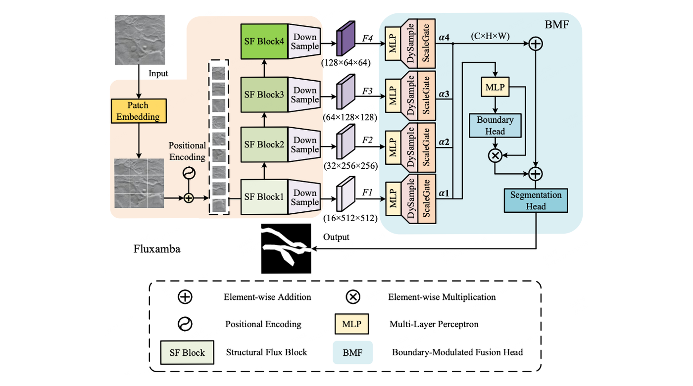
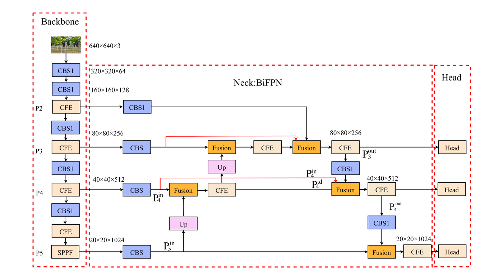

National Silver Award
Challenge Cup, 2023
🎓 Master's Student at UCAS · 🔬 Research Intern at TeleAI · 🧠 MLLM Reasoning · Promptable Vision

Hi! I am Huiyao Zhang (Chinese name: 张晖耀), a Master's student in Computer Technology at the University of Chinese Academy of Sciences (UCAS), supervised by Prof. Ye Li. I am also a research intern at TeleAI, working with Chuyi Wang on multimodal reasoning and post-training for MLLMs. Before that, I received my B.Eng. in Mechatronic Engineering from Guangxi University.
My research spans MLLM reasoning and post-training, unified vision understanding and generation, prompt-conditioned segmentation, Visual Agents, and efficient architectures such as Mamba / SSM. I am particularly interested in building systems that can perceive, reason over, and generate visual content—or recover their intended visual interfaces when prompts are unavailable—for grounded and reliable decision-making.
My recent work covers prompt-space conditioning for promptable foundation models, cross-modal chain-of-thought reasoning, frequency-aware modeling for thin structures, and topology-aware state-space architectures. IP-SAM studies prompt-absent deployment for prompt-conditioned segmenters, and its latest version generalizes the approach from camouflaged object detection to medical polyp segmentation. I have led or co-led projects across visual understanding, remote-sensing segmentation, and efficient modeling. My work has also been submitted to AAAI, CVPR, ECCV, and IJCAI, with two papers accepted to ECCV 2026.
目前我在中国科学院大学攻读计算机技术硕士，同时在 TeleAI 开展多模态推理与 MLLM post-training 方向研究。我主要关注视觉证据如何被更可靠地抽取、组织与选择，并服务于最终决策；同时也关注提示条件视觉模型在无外部提示部署中的可靠适配、Visual Agents 以及 Mamba / SSM 等高效基础架构。


IP-SAM (ECCV 2026)
FGOS-Net (ECCV 2026)
ArgusCogito (arXiv 2025)
